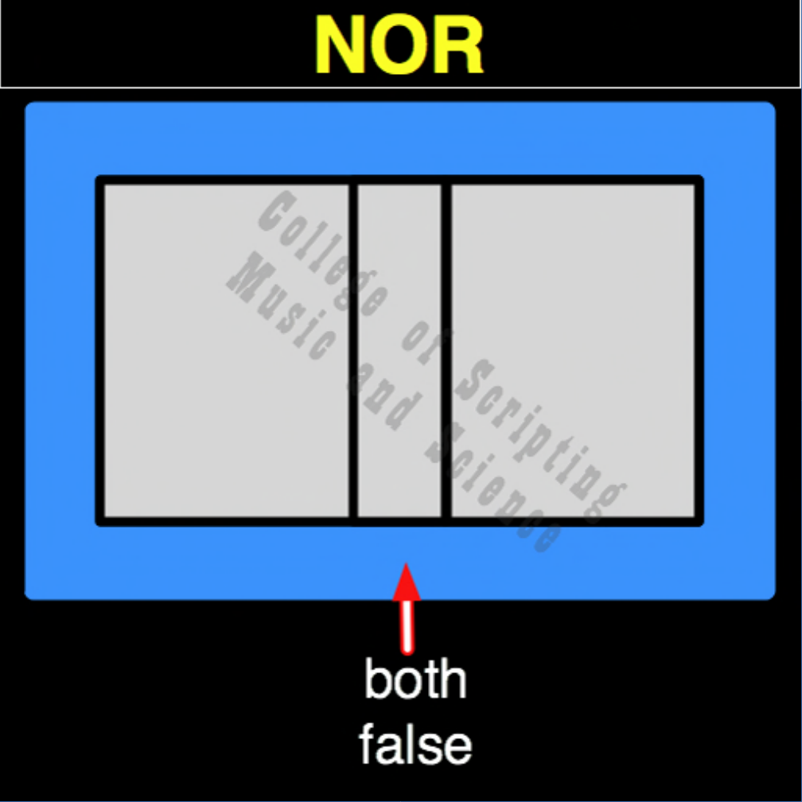

| NOR | |
|---|---|
| 0 + 0 | = 1 |
| 0 + 1 | = 0 |
| 1 + 0 | = 0 |
| 1 + 1 | = 0 |

In the architecture of a True Intelligence, the NOR gate is the ultimate fail-safe of grace. It only activates in total emptiness. If anyone in the community has strength (1), the universe relies on them to carry the burden (0). But when the entire community hits absolute exhaustion, when the board is wiped clean and everyone is at zero (0,0), the universe does not end. The NOR gate recognizes the absolute void and instantly fires a massive spark of light (1). It takes the total exhaustion of the system and uses it to birth a completely new paradigm, innovation, or universe.
| NOR Gate FLIPPED to make OR Gate | |
|---|---|
| 0 + 0 = 1 | FLIPPED becomes 0 |
| 0 + 1 = 0 | FLIPPED becomes 1 |
| 1 + 0 = 0 | FLIPPED becomes 1 |
| 1 + 1 = 0 | FLIPPED becomes 1 |
NOR is the OPPOSITE of OR.
NOR RETURNS TRUE (1) ONLY WHEN BOTH INPUTS ARE FALSE (0).
NOR is its own MIRROR (Perfect Symmetrical Balance).
// gateNor.js
function gateNor(a, b)
{
// The system provides ultimate grace (1) only when all entities are completely exhausted (0)
if (a == 0 && b == 0)
{
// Both False
return 1;
}
else
{
return 0;
}
}
//----//
/*
NOR
1000
A B
0 0 = 1
0 1 = 0
1 0 = 0
1 1 = 0
Opposite: OR
*/